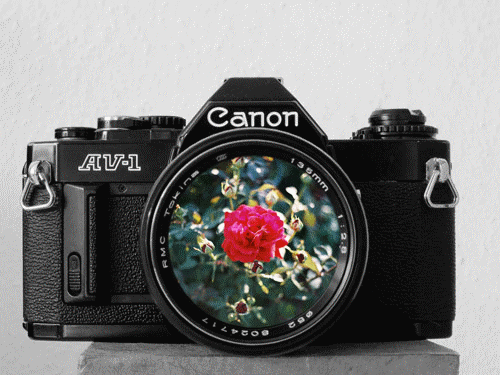

Sara Liguoro
"nessun maggior dolore che ricordarsi del tempo ne la miseria"
-Dante, V canto
Libri preferiti
- Bianca come il latte rossa come il sangue;
- Il grande Gatsby;
- Le pagine della nostra vita.
Cantanti preferiti
- Marracash;
- Jess Glynne;
- Queen.
Serie tv preferite
- Bates Motel;
- La casa di carta;
- Merlin.
Me
Ciao, mi chiamo Sara e ho 18 anni, sono una studentessa e frequento l'istituto tecnico industriale G. Marconi di Catania; le mie passioni sono gli animali, in particolar modo i gatti, e la fotografia.

"La musica e i gatti sono ottimo rifugio dalle miserie della vita."
-Albert Schweitzer

"Le fotografie possono raggiungere l’eternità attraverso il momento."
-Henri Cartier-Bresson